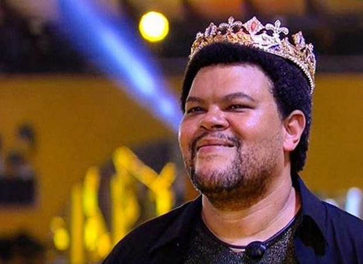

Alexandre da Silva Santana, mais conhecido como Babu Santana (Rio de Janeiro, 10 de dezembro de 1979) é um ator e cantor brasileiro. Vindo do grupo de teatro "Nós do Morro", fez diversos filmes e novelas, tendo ganhado notoriedade após interpretar Tim Maia na cinebiografia do cantor. Ganhou duas vezes o Grande Otelo, maior prêmio do cinema brasileiro.
